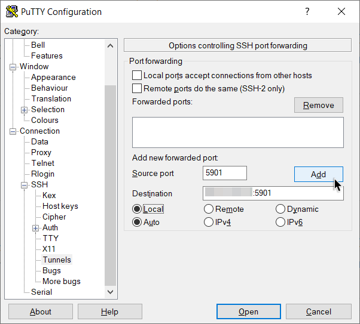
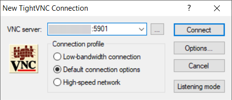

云端搭建Linux学习环境
1. 为Linux环境安装图形化桌面(Gnome)
云服务器：Gnome + VNC
在CentOS上，可以直接安装Gnome+VNC一键包
yum update && yum install wqy-microhei-fonts |
wget https://gist.githubusercontent.com/ivmm/d93138038edbd551def09205bb61ae11/raw/8ed82411926acb3ab331d293f6200447ad2c85cf/gnome_install.sh && bash gnome_install.sh |
输入密码即完成配置。

由于我之前安装了Ubuntu镜像，所以将继续使用这个系统。操作如下：
sudo apt update |
安装TigerVNC
sudo apt install xserver-xorg-core |
安装并启动Gnome
sudo apt install ubuntu-gnome-desktop |
设置VNC密码，并选择密码是否只读（无法进行鼠标键盘交互）,一般选择否n即可
vncpassword |
设置VNC启动配置，新建一个xstartup文档
sudo nano ~/.vnc/xstartup |
写入以下内容
|
完成后就可以开启VNC服务端，GUI解析度可以自由调整
chmod a+x ~/.vnc/xstartup |
vncserver -localhost no -geometry 1440x810 -depth 24 |
本地：VNC客户端
为了查看远程GUI桌面，我们需要使用虚拟网络计算VNC (Virtual Network Computing) 工具。
VNC是一款由AT&T实验室所开发的可操控远程计算机的软件
在本地电脑上下载TightVNC客户端，以透过SSH完成VNC连接
在PuTTY设置SSH Tunnel，端口号5901，Destination <公网IP>:5901，选择Add，回到session页面打开
打开后输入<公网IP>:5901，输入刚才设置的VNC密码
就可以看到远程Linux图形界面了~

2. 学习Linux的基本操作
(CentOS适用)
系统
- 系统与内核
cat /etc/redhat-release、uname -r - CPU
grep "CPU" /proc/cpuinfo - 运行时间（ubuntu同）
uptime - 系统位数
getconf LONG_BIT - 硬盘与分区
df -h
软件
- 软件装卸（ubuntu下
yum换为apt）- 更新系统
yum update（ubuntu下另需apt upgrade） - 更新软件源缓存
yum makecache - 搜索软件
yum search <software-name> - 安装软件
yum install <software-name> - 卸载软件
yum remove <软件名>（ubuntu下autoremove）
- 更新系统
- 软件管理（ubuntu同）
- 启动
service <software-name> start - 重启
service <software-name> restart - 关闭
service <software-name> stop - 查看状态
service <software-name> status
- 启动
文件
- 文件管理（Linux通用）
- 创建文件
touch <file> - 创建目录
mkdir <directory> - 复制
cp <file/dir> - 移动或重命名
mv <file/dir> - 修改权限
chmod +??? <file/dir> - 删除文件
rm <file> - 删除目录及其下文件
rm -rf <directory>
- 创建文件
- 文件下载
wget http://<address> - 文件压缩
tar zcvf <compression>.tar.gz - 文件解压
tar zxvf <compression>.tar.gz